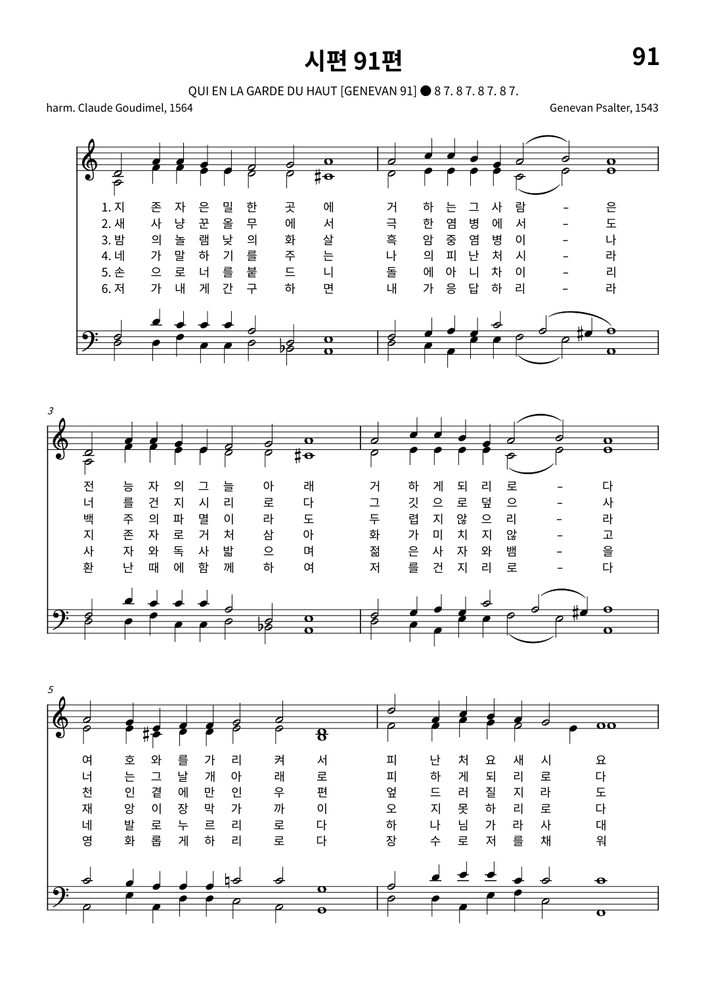

시편 91편
QUI EN LA GARDE DU HAUT [GENEVAN 91] · 8 7. 8 7. 8 7. 8 7.
곡조: Genevan Psalter, 1543 · 화성: Claude Goudimel, 1564 · 가사: 개역한글판 시편 91편 편역(AI 초벌 편역판 · 신학 감수 전) · 6절
악보 PDF MusicXML(출력용) MusicXML(반주용, 전주·반복 포함) 개역한글 시편 91편 읽기

가사
1절 (시편 1-2)
지존자 은밀한 곳에
거하는 그 사람은
전능자의 그늘 아래
거하게 되리로다
여호와를 가리켜서
피난처 요새시요
의뢰할 하나님이라
내가 말하리로다
지존자 은밀한 곳에
거하는 그 사람은
전능자의 그늘 아래
거하게 되리로다
여호와를 가리켜서
피난처 요새시요
의뢰할 하나님이라
내가 말하리로다
2절 (시편 3-4)
새 사냥꾼 올무에서
극한 염병에서도
너를 건지시리로다
그 깃으로 덮으사
너는 그 날개 아래로
피하게 되리로다
그의 진실하심이여
방패와 손 방패라
새 사냥꾼 올무에서
극한 염병에서도
너를 건지시리로다
그 깃으로 덮으사
너는 그 날개 아래로
피하게 되리로다
그의 진실하심이여
방패와 손 방패라
3절 (시편 5-8)
밤의 놀램 낮의 화살
흑암 중 염병이나
백주의 파멸이라도
두렵지 않으리라
천 인 곁에 만 인 우편
엎드러질지라도
재앙 가까이 못하리
악인 보응 보리라
밤의 놀램 낮의 화살
흑암 중 염병이나
백주의 파멸이라도
두렵지 않으리라
천 인 곁에 만 인 우편
엎드러질지라도
재앙 가까이 못하리
악인 보응 보리라
4절 (시편 9-11)
네가 말하기를 주는
나의 피난처시라
지존자로 거처 삼아
화가 미치지 않고
재앙이 장막 가까이
오지 못하리로다
그 사자들을 명하사
네 모든 길 지키리
네가 말하기를 주는
나의 피난처시라
지존자로 거처 삼아
화가 미치지 않고
재앙이 장막 가까이
오지 못하리로다
그 사자들을 명하사
네 모든 길 지키리
5절 (시편 12-14)
손으로 너를 붙드니
돌에 아니 차이리
사자와 독사 밟으며
젊은 사자와 뱀을
네 발로 누르리로다
하나님 가라사대
날 사랑하매 건지고
이름 알매 높이리
손으로 너를 붙드니
돌에 아니 차이리
사자와 독사 밟으며
젊은 사자와 뱀을
네 발로 누르리로다
하나님 가라사대
날 사랑하매 건지고
이름 알매 높이리
6절 (시편 15-16)
저가 내게 간구하면
내가 응답하리라
환난 때에 함께 하여
저를 건지리로다
영화롭게 하리로다
장수로 저를 채워
나의 구원 보이리라
주 말씀하시도다
저가 내게 간구하면
내가 응답하리라
환난 때에 함께 하여
저를 건지리로다
영화롭게 하리로다
장수로 저를 채워
나의 구원 보이리라
주 말씀하시도다